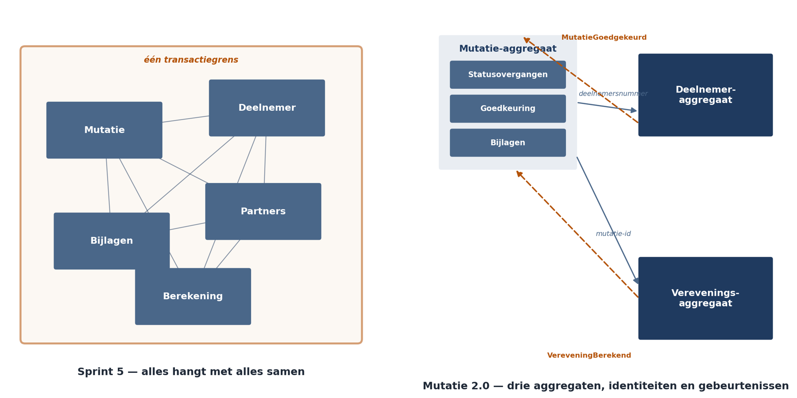

Deel 12 — Tactisch domeingedreven ontwerp en de modulith
Slidedeck · 32 slides · dagdeel van 4 uur inclusief opdrachten
Cursus Softwarearchitectuur · Niveau 2 (CPSA-A) · Deel 12 van 28
Slide 1 — titel
Tactisch DDD en de modulith Niveau 2 · Deel 12 — Entiteiten, waardeobjecten, aggregaten Competentiegebieden: methodisch en technologisch
Slide 2 — bullets
Terugblik deel 11
- Bounded contexts: meerdere modellen met grenzen, niet één model voor de organisatie
- Contextgrenzen kondigen zich aan als taalproblemen
- Een module hoort bij precies één context
- Vandaag: binnen één grens
Slide 3 — sectie
Sprint 5
Slide 4 — statement
De vraag van het team: “Waar begint en eindigt een transactie?”
Slide 5 — bullets
Twee symptomen, één oorzaak
- Twee behandelaars aan hetzelfde dossier → de wijzigingen van de eerste verdwenen. Geen foutmelding
- Bij de zesde mutatiesoort raakt één adreswijziging acht tabellen
- Het team bouwde mutatie, deelnemer, partners, bijlagen en berekening als één geheel
Slide 6 — sectie
Entiteit en waardeobject
Slide 7 — bullets
Het onderscheid
- Entiteit — identiteit los van eigenschappen. Een deelnemer blijft dezelfde na naamswijziging, verhuizing, scheiding
- Waardeobject — is zijn waarde. € 1.240,50 is uitwisselbaar met € 1.240,50
- Toets: doet het ertoe wélke van twee gelijke exemplaren dit is?
Slide 8 — bullets
Drie gevolgen
- Onveranderlijk — u wijzigt niet, u vervangt. Een categorie fouten verdwijnt
- Draagt eigen regels — een
Periodeweet dat het einde niet vóór het begin ligt - Goedkoop — geen identiteit, geen levensduurbeheer, geen sleutel
Slide 9 — statement
Peildatum als eigen type kan niet verwisseld worden met een verwerkingsdatum.
De compiler weigert.
Het enige cross-cutting concept uit niveau 1 dat niet te automatiseren was — nu deels wel.
Slide 10 — opdracht
Opdracht 12.1 — Entiteit of waardeobject?
Twintig begrippen. Individueel, 20 minuten.
Drie zijn omstreden. Burgerservicenummer verrast: het identificeert een persoon, het ís geen identiteit.
Slide 11 — sectie
Het aggregaat
Slide 12 — statement
Een aggregaat beantwoordt één vraag: waarbinnen moet een regel op elk moment kloppen? Dat is een consistentievraag, geen structuurvraag.
Slide 13 — bullets
De vier regels
- Alleen de wortel is van buiten bereikbaar
- Eén aggregaat, één transactie
- Verwijzen met identiteiten, niet met objecten
- Buiten de grens: uiteindelijke consistentie via gebeurtenissen
Slide 14 — tabel
Onmiddellijk of uiteindelijk?
| Regel | |
|---|---|
| Niet goedkeuren door de indiener | onmiddellijk |
| Goedgekeurd = alle bijlagen aanwezig | onmiddellijk |
| Dossier toont laatste mutatiestatus | uiteindelijk |
| Kernadministratie kent de mutatie | uiteindelijk |
| Maandoverzicht werkgever klopt | uiteindelijk |
Slide 15 — figuur

Slide 16 — statement
Houd aggregaten zo klein als de consistentieregels toelaten. Toets: als dit een seconde later klopt — wat gaat er dan mis, en voor wie?
Slide 17 — bullets
Grote aggregaten geven drie problemen tegelijk
- Gelijktijdigheidsconflicten — twee behandelaars
- Prestatieproblemen — alles laden om iets kleins te wijzigen
- Verwevenheid — B3 uit niveau 1, in nieuwe vorm
Slide 18 — opdracht
Opdracht 12.2 — Bepaal de aggregaatgrenzen Regels opschrijven → onmiddellijk of uiteindelijk → grenzen trekken. Groepen van vier, 40 minuten. f) Wijzigt elke handeling precies één aggregaat?
Slide 19 — sectie
De overige bouwstenen
Slide 20 — bullets
Vier stuks
- Domeinservice — logica die niet bij één entiteit hoort. Verevening gebruikt twee deelnemers én werkgeversparameters
- Repository — één per aggregaat, nooit per tabel
- Fabriek — dwingt invarianten af die vanaf het begin moeten gelden
- Domeingebeurtenis — mutatie goedgekeurd, in domeintaal, voltooide vorm
Slide 21 — bullets
Domeingebeurtenissen doen drie dingen tegelijk
- Ze koppelen aggregaten zonder ze te vergroten
- Ze zijn de vastlegging die QS-4 vraagt
- Ze zijn de taal waarin het domein zichzelf beschrijft Het zijn precies de gebeurtenissen van de tijdlijn uit deel 11
Slide 22 — statement
MutatieRecordUpdated is geen domeingebeurtenis.
MutatieGoedgekeurd wel.
Slide 23 — sectie
Van aggregaten naar modules
Slide 24 — tabel
De vertaling
| DDD | In de modulith |
|---|---|
| Bounded context | groep modules met gedeelde taal |
| Aggregaat | hart van een module; de transactiegrens |
| Repository | toegang tot eigen gegevens |
| Domeingebeurtenis | communicatie tussen modules |
| Anticorruption layer | de integratiemodule |
Slide 25 — bullets
Drie moduleregels — en hun handhaving
- Eigen gegevens → gescheiden schema’s met rechten. Onvermijdelijk
- Verwijzen met identiteiten → bouwstraatcontrole op typegebruik. Controleerbaar
- Wijzigingen via gebeurtenissen → controle op transacties over twee schema’s. Controleerbaar
Slide 26 — statement
De aggregaatgrens zelf is niet machinaal te toetsen. Net als het datumconcept in niveau 1: een betekeniskwestie. Dus: expliciet op de agenda van het gremium.
Slide 27 — opdracht
Opdracht 12.5 — Van aggregaten naar modules Groepen van vier, 30 minuten. e) Hoe zorgt u dat het team dat over een jaar de zevende mutatiesoort bouwt, de grenzen goed trekt? Beschrijf het mechanisme, niet het voornemen.
Slide 28 — sectie
Het bloedarmoedige model
Slide 29 — bullets
Wanneer is het een probleem?
- Wel: in kernsubdomeinen.
mutatie.keurGoed(medewerker)weigert bij dezelfde persoon — een service kan dat omzeilen - Niet: leesmodellen (die bewaken niets), generieke subdomeinen, inleesobjecten aan de rand
- De lijn: rijk model waar de complexiteit zit die u onderscheidt; pragmatisch elders
Slide 30 — statement
Een regel die op drie plaatsen staat, loopt uiteen. En u merkt het niet als storing — u merkt het als een verkeerd administratief resultaat, maanden later.
Slide 31 — bullets
Terug naar sprint 5
- Twee mutaties op dezelfde deelnemer → conflict verdwijnt
- Dezelfde mutatie → conflict blijft, en dat is correct
- Een ontwerp waarin nooit een conflict optreedt, verbergt ze — dat was sprint 5: geen foutmelding, alleen verdwenen werk
- Prijs: het dossier toont de status met vertraging. Dat moet zichtbaar zijn
Slide 32 — bullets
Huiswerk en vooruitblik
- 12.7 — welke handeling in uw systeem raakt hoeveel tabellen, en hoeveel horen er echt bij elkaar?
- 12.4d — let op de eerlijkheidstoets: de winst in schrijftijd is klein. De echte winst zit in gelijktijdigheid
- Deel 13: microservicesarchitectuur — wanneer de modulith wél gesplitst wordt, en wat dat kost
Ductus B.V. · Cursus Softwarearchitectuur · Niveau 2, deel 12 · Slidedeck